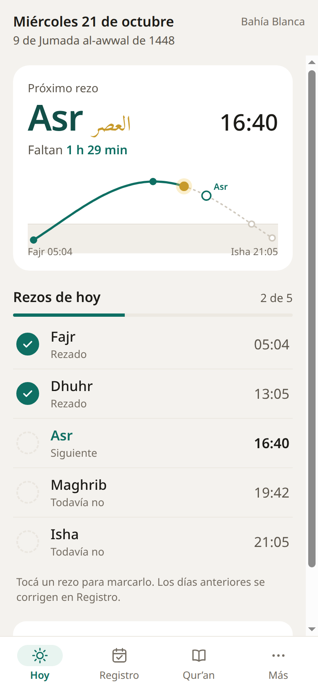
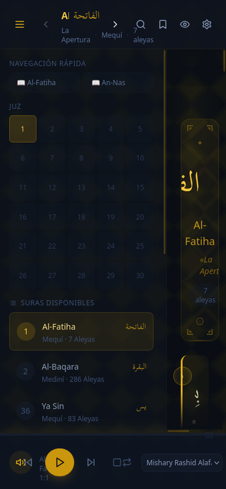
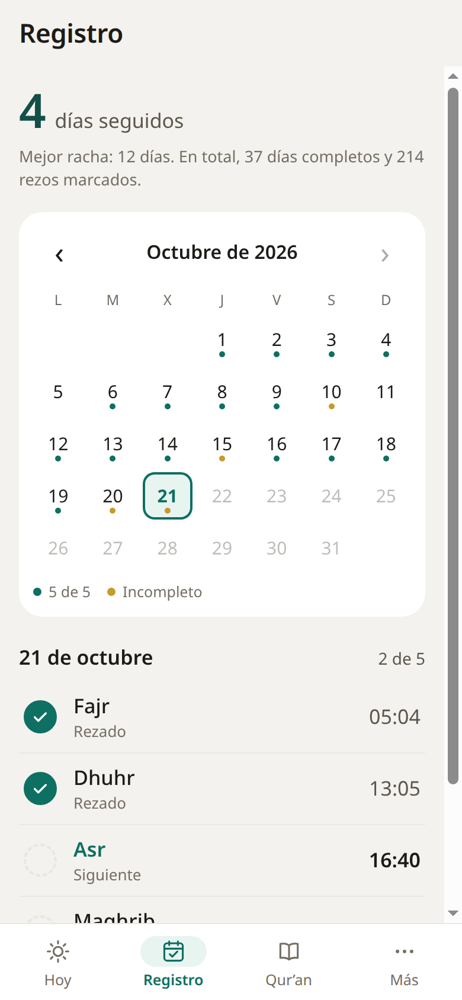

Tus cinco rezos diarios,
con la serenidad que merecen
Horarios de oración calculados con exactitud astronómica en tu propio dispositivo. Adhan auténtico de la mezquita de Doha, widgets solares en vivo para Android, lector del Sagrado Qur’an con recitación offline y sincronización privada en Google Drive.
Una experiencia diseñada para tu tranquilidad
Explorá cada rincón de la app: desde el recorrido del sol en vivo hasta la recitación del Corán aleya por aleya.

La salat en su momento exacto
Una mirada clara y serena para saber cuánto falta para tu próxima cita con el rezo. Sin números confusos ni recargas externas.
-
Recorrido del Sol en Tiempo Real Visualizá el arco solar entre el alba (Fajr) y la noche (Isha) con el punto exacto donde se encuentra el sol ahora.
-
Marcado de Rezos al Instante Tocá cada rezo cumplido para registrarlo. El sistema solo habilita el marcado cuando llega el horario correspondiente.
-
Rumbo a la Qibla Orientación astronómica precisa hacia La Meca calculada con la fórmula de gran círculo para tu ubicación.
Tus rezos en tu pantalla de inicio
Mantené tus oraciones a la vista sin abrir la aplicación. Los nuevos widgets nativos de Android se actualizan de forma continua con cero impacto en la batería.
-
Reloj TextClock Nativo El sistema operativo actualiza el minutero en vivo en el lanzador sin despertar la CPU, respetando tu formato de 12 o 24 horas.
-
Actualización Automática al Minuto Elegí entre actualización en tiempo real (1 min), balanceada (5 min), ahorro o inteligente. Refresco instantáneo al desbloquear.
-
Previsualización Real en el Selector Elegí el diseño que mejor combine con tu fondo de pantalla viendo la escala y tipografía exactas antes de añadirlo.

Lectura sagrada y recitación offline
Una experiencia de lectura inmersiva con texto caligráfico Uthmani verificado por Tanzil y la traducción anotada de Raúl González Bórnez.
-
Voz de Shahriar Parhizgar Descargá suras individuales para escuchar la recitación con seguimiento sincronizado aleya por aleya, sin necesidad de conexión.
-
Controles Multimedia en Segundo Plano Pausá o continuá desde la barra de notificaciones del teléfono. El reproductor se pausa automáticamente ante el Adhan.
-
Ajustes de Tipografía Inmediatos Cambiá el tamaño de letra, el modo de lectura (solo árabe, traducción o ambos) y retomá siempre desde tu última aleya leída.

Cultivá tu constancia con el rezo
Un espacio íntimo para ver tu progreso mensual, corregir rezos pasados y celebrar tus días de cumplimiento sin presiones ni juicios.
-
Calendario Mensual con Vista Visual Identificá de un vistazo los días completos (5 de 5) e incompletos para comprender tu ritmo y perseverar en la práctica.
-
Formato Local Seguro (Append-Only) Tus oraciones se escriben en un archivo local
registro.jsonl. Tus datos son siempre tuyos y portables. -
Pausa Consciente para Viajes Activá el modo de pausa temporal cuando viajes o por motivos personales: silencia avisos y cuida tus estadísticas de días perdidos.
Diseñado con respeto, privacidad y precisión ritual
Construido para acompañarte en tu práctica diaria sin invadir tu atención ni depender de servidores externos para funcionar.
Cálculo 100% Local
Los horarios se calculan en tu máquina mediante FFI al motor PrayTimes C (el mismo del firmware de reloj físico). No toca internet ni se interrumpe si no hay red.
Widgets Solares en Android
Novedad de v0.1.26: Reloj TextClock en vivo en la pantalla de inicio, seguimiento visual del arco solar y los 5 rezos del día con frecuencia configurable.
Adhan Auténtico y Tonos Serenos
Cada oración tiene una asignación de la colección Doha (Dominio Público) o tonos discretos. Podés pausar avisos en viajes o habilitar recordatorios amables.
Lector y Recitación del Qur'an
Texto árabe caligráfico Uthmani y traducción al español. Descargá suras para escuchar sin conexión la voz de Shahriar Parhizgar con seguimiento aleya por aleya.
Registro y Acompañamiento
Marcá tus rezos completados en el día. Historial local mensual en formato append-only (registro.jsonl) con contador de rachas y días cumplidos.
Sincronización Privada
Sincronizá tus rezos, lectura y configuración entre computadoras y celulares conectando tu cuenta de Google Drive, usando solo el espacio privado de la app.
Elegí tu plataforma y descargá Adhan Companion
Paquetes oficiales verificados con firmas criptográficas y SHA-256 para Android, Windows y Linux.
Android
Widgets nativos con reloj en vivo, alarmas exactas con AlarmManager, recitación del Qur’an en segundo plano y actualización interna.
Windows
Instalador liviano por usuario. Se minimiza discretamente en la bandeja del sistema junto al reloj y cuenta con auto-actualizador integrado.
Linux
Integración nativa con icono de bandeja (tray), autostart, notificaciones del sistema y soporte para Wayland y X11.
¿Sos usuario de terminal en Ubuntu / Debian? Instalación rápida
sudo apt install "./Adhan.Companion_0.1.26_amd64.deb"